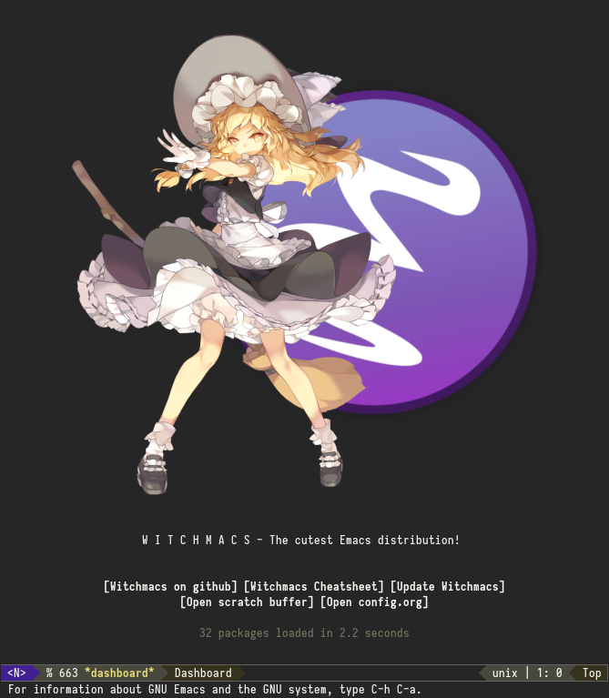
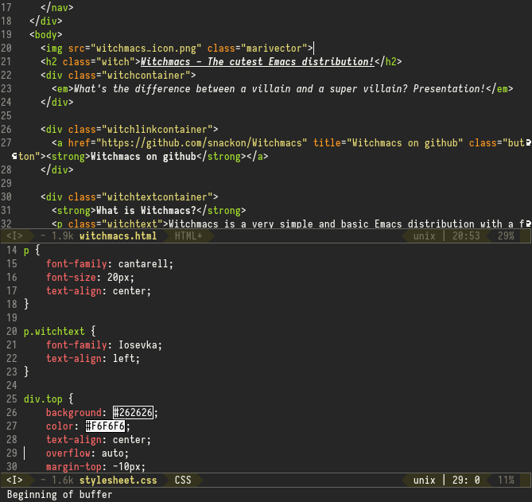
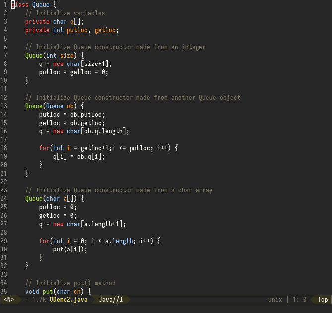
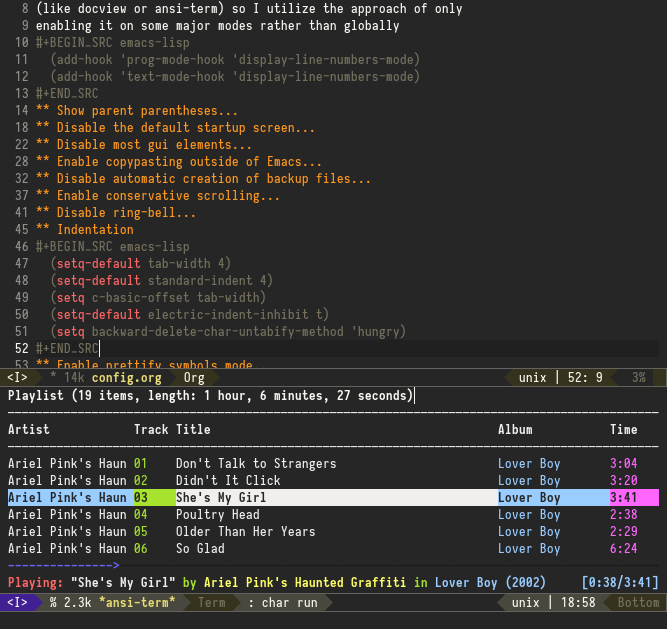

Witchmacs is a very simple and basic Emacs distribution with a focus on having a superb presentation and being easily customizable right off the bat.
In my mind, the end user is two kinds of people: me and people who want to get into Emacs but don't want to use Spacemacs or Doom and want a solid starting point for their own Emacs config (yes, I know that is oddly specific!).
Features:


